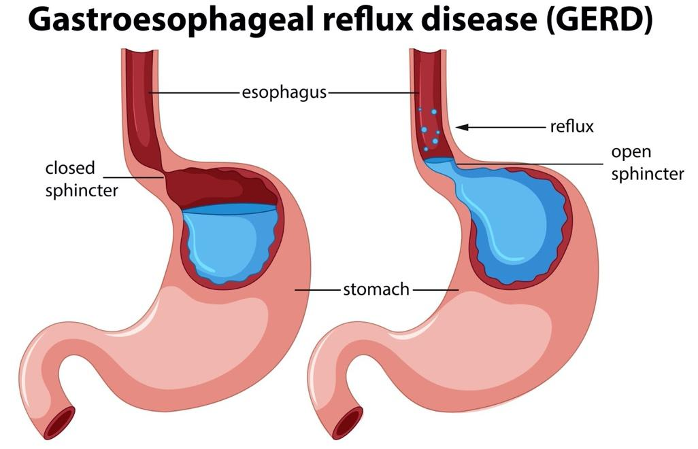
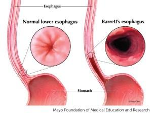
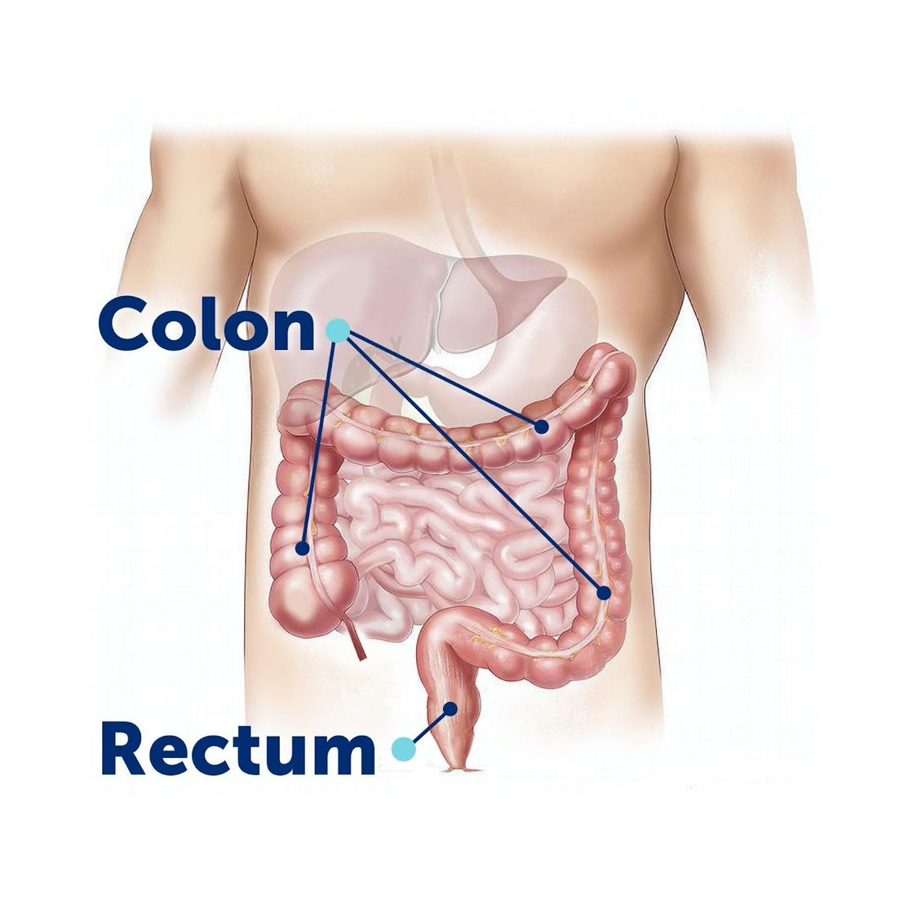
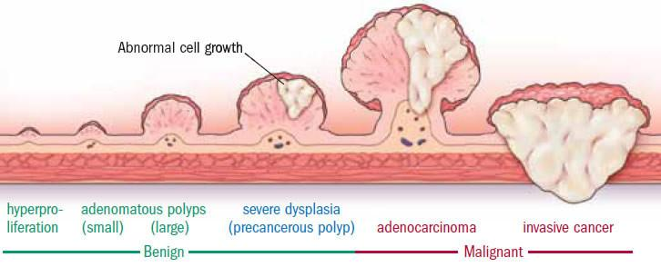
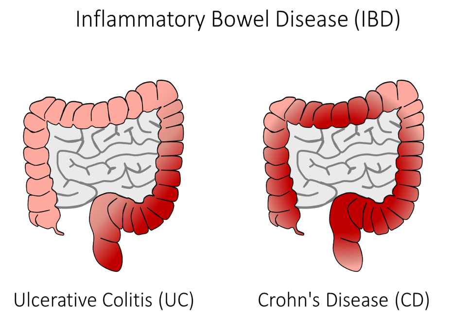
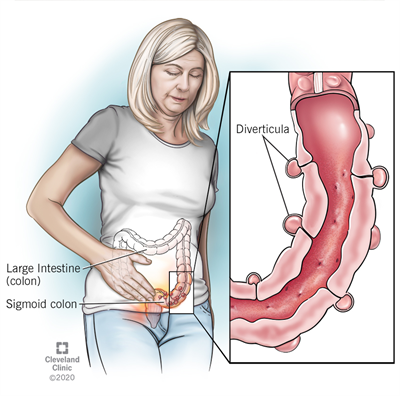
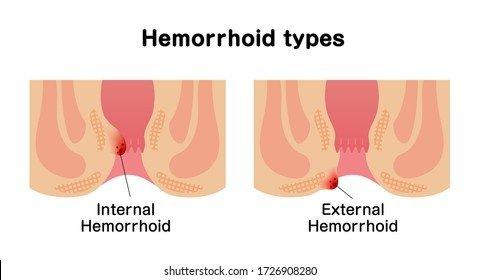
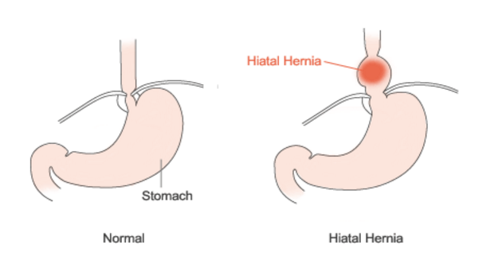
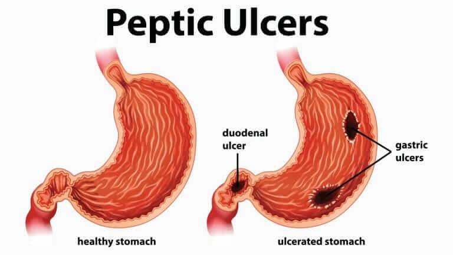

Conditions
Abdominal Pain #
Abdominal pain is pain that is felt anywhere between your chest and groin areas of the body, commonly referred to as the stomach region. Abdominal pain can occur from organs of the digestive tract, or from other organs located in the pelvic and abdominal region.
Common disorders that can cause abdominal pain include, but are not limited to, infection, gaseous distension, ulcer formation, obstruction or blockage, inflammation, or perforation.
To gather further information to address your abdominal pain, we start with performing a physical exam in order to better assess your pain. Tests, such as a stool, blood or urine test; a CT or MRI scan; may be required. Procedures, such as a colonoscopy or endoscopy may be required to be able to get an internal look at any possible causes.
Acid Reflux #
Acid reflux occurs when the stomach acid reoccuringly flows back up into the esophogus, the tube connecting your mouth and stomach. This “backwash” can cause irritation to the lining of your esophagus, which in turn causes a burning feeling in your chest region.
Heartburn #
One of the main symptoms of acid reflux is called heartburn. It is a burning sensation felt in the center of the chest region of the body. This can come from eating large, spicy, or fatty meals and not a cause for major concern. However, this can be a symptom of an underlying condition.
Gastroesophageal Reflux Disease (GERD) #
GERD is a more severe form of acid reflux where the valve between the stomach and the esophagus, known as the lower esophageal sphincter (LES), becomes damaged or weakened. This permits the stomach acid to continuously travel back up into the esophagus. If GERD remains untreated, the stomach acid can eventually damage the lining of the esophagus and lead to other disorders or diseases.
In treating GERD, many who implement lifestyle modifications such as weight loss, adjusting one’s diet, or sleeping positions can be beneficial. Other intervention methods used include medication, and in severe cases an anti-reflux surgical procedure may be performed.
Barrett's Esophagus #
Barrett's esophagus is a condition where the flat, pink lining of the esophagus becomes thicker and inflamed due to the damage done by acid reflux.
Barrett’s esophagus is a condition that can affect those with long-term GERD or acid reflux. Those who have GERD, may be recommended to get a screening for Barrett’s esophagus using an endoscopy and biopsy.
Blood in Stool #
When there is blood in one’s stool, this may be a result of bleeding from anywhere in the GI tract. Blood in the stool may appear in different colors depending on the source of the bleeding. When the blood is black or “sticky”, this may indicate bleeding from the upper organs of the GI tract, for example, from the stomach or esophagus. If the blood appears more maroon or burgundy, or most commonly, a bright red color after a bowel movement this most likely indicates bleeding from the colon, rectum or anus.
Diagnosing the source of the bleeding will begin with a review of the symptoms, evaluation of personal and family medical histories, and a physical exam. A blood and stool test may be required, and commonly an endoscopy and colonoscopy will be required to be able to better evaluate the cause of the bleeding internally. In some cases, further imaging, such as small bowel capsule endoscopy or CT scan, may be necessary.
Celiac Disease and Gluten Sensitivity #
Celiac disease is an autoimmune condition that occurs when your immune system reacts negatively to the protein, gluten, leading to damages of the lining of the small intestine. The damages lead to the small intestines not being able to absorb nutrients from food properly. Gluten is a substance that is found in many different grains and other food products.
There is currently no cure for Celiac disease, however, in most cases eliminating gluten from one’s diet will alleviate the symptoms and give time for your body's intestinal tract time to heal. Dietary modifications include avoiding wheat, barley, oats, and other products that state they contain gluten.
Gluten Sensitivity #
Those with gluten sensitivity do experience digestive symptoms when ingesting gluten, however, their small intestines do not develop damages like we see in those with Celiac disease.
Gluten Intolerance #
Those with gluten intolerance exhibit symptoms of Celiac disease when ingesting gluten, however, do not test positive for the antibodies associated with the disease and do not present with damage to the small intestines.
Colon Cancer #
Colorectal cancer is cancer that originates in the colon, the large intestine, or the rectum, the end of the colon. There is no single cause of colon cancer. Commonly, colon cancers begin as benign polyps that can slowly develop into cancer.
In many cases of colon cancer, there are no symptoms. However, in the case where one does experience symptoms, some examples are abdominal pain and tenderness in the lower abdomen, blood in the stool, diarrhea, constipation, or other change in bowel habits, or unexplained weight loss.
Diagnosing colon cancer is usually done by screening tests even before symptoms present themselves. A physical examination is rarely able to indicate cancer unless there is a mass in the abdominal region. A colonoscopy is the best way to confirm if there is cancer.
Colon Polyps #
Colon polyps are small, often precancerous growths that form from the interior lining of the bowel. Polyps generally don’t cause symptoms, so they go undetected. However, if one does experience symptoms, it would be presented as blood in the stools, change in bowel movements, and fatigue. It's important to have them removed since they can lead to more serious conditions, such as cancer. Most polyps are not cancerous. The type of polyp, its location, and its size will be the indicator to determine if they will begin producing cancer cells.
Treatment includes a colonoscopic polypectomy, which is a procedure that will take a sample of the polyp to be tested. This will indicate if the polyps are cancerous or benign.
Constipation #
An individual is considered constipated when they have three or less bowel movements in a week. Another indication is when an individual is having difficulties with passing stool. Chronic constipation, lasting longer than a week, or recurring constipation can be an indication of an underlying problem.
Constipation can occur from multiple digestive tract issues,or from behavioral, hormonal or dietary changes. Common causes include: limited fiber or water intake, lack of physical activity and exercise, irritable bowel syndrome, structural colon disease such as diverticular disease, colon or anal cancer, or anal pathology such as hemorrhoids, inflammation, strictures, or fissure.
Inflammatory Bowel Diseases #
Inflammatory bowel disease causes inflammation of the lining and deeper tissues of the digestive tract.
Examples of chronic inflammatory bowel diseases include:
Crohn’s Disease #
Chrohn’s disease occurs when your body's immune system mistakenly attacks and destroys healthy tissue in the body. It can occur anywhere throughout the GI tract. It commonly involves the thickness of the walls in the lower part of the digestive system, however, it can present “patchy” and be scattered throughout the GI tract. The exact cause of Crohn’s disease is unknown.
Ulcerative Colitis #
Ulcerative colitis is usually in one location, and does not skip areas. It starts at the rectum and expands up and throughout the colon. Ulcerative colitis does not affect other organs in the digestive tract. The exact cause of ulcerative colitis is unknown.
Symptoms may include: diarrhea, fever and weakness, abdominal pain, bloating and cramping, blood in stool, unexplainable weight loss.
When diagnosing inflammatory bowel diseases, we will start with obtaining family history and blood or stool testing. A colonoscopy or endoscopy (or at times both), are helpful indicators to be able to check if there is inflammation.
Diarrhea #
Diarrhea is loose stool, it may feel uncontrollable and urgent. Diarrhea can make an individual feel weak and dehydrated. Although diarrhea is common, severe and long lasting diarrhea may be an indication of an underlying issue.
Symptoms may include: abdominal bloating, stomach cramps, fever, nausea or vomiting, and unintended weight loss. If diarrhea lasts for more than two days, you may contact your doctor to make sure there are no underlying conditions.
Dysphagia #
Dysphagia is when a person has a difficult time swallowing. If dysphagia is a recurring issue, this may indicate an underlying problem with the mouth, pharynx, or esophagus.
Symptoms may include: pain, coughing or gagging when attempting to swallow, heartburn, feeling hoarse, regurgitation, unintended weight loss, and excess saliva production.
There are two types of dysphagia based on their location.
Oropharyngeal dysphagia #
This is when the patient is having difficulties beginning to swallow. This may cause the patient to cough, gag, or feel as though the food or liquid is going down the wrong pipe. This may indicate an issue with the brain’s communication to the mouth or throat.
Esophageal dysphagia #
This may indicate a structural or neuromuscular issue involving the esophagus. The patient may feel as though food is getting stuck in their throat, or stuck in their chest. Underlying conditions may include: GERD, scarring or inflammation, or cancer of the stomach or esophagus.
When diagnosing dysphagia, we begin by taking the patient’s family and personal medical history, and conduct a physical examination. We then will recommend tests such as an endoscopy procedure or x-ray imaging. This will give us the opportunity to see if there are any internal issues.
Treatment of dysphagia may include, making adjustments to the patient’s diet, medication, or conducting an endoscopy procedure to either dilate the esophagus if there is a narrow section or if necessary remove the object that is blocking the esophagus.
Diverticular Disease #
Diverticular disease is when small pouches begin to form along the walls of the GI tract, most commonly found in the colon. These small pouches are referred to as diverticula.
Diverticulosis #
Diverticulosis is a condition where these pouches have formed in the GI tract, but the patient usually will appear asymptomatic. In some cases when the patient is symptomatic, they may experience symptoms such as cramping, bloating, or constipation.
Diverticulitis #
Diverticulitis is a condition where these pouches (diverticula), become infected or inflamed. Symptoms of diverticulitis are more severe than those of diverticulosis. The patient may feel abdominal tenderness in the lower region of the stomach, bloating, fever, nausea and vomiting, and a loss of appetite.
Risk factors may include diet, age, obesity, and lifestyle choices such as smoking.
Diagnosing diverticulitis include, a blood test, an ultrasound, or a CT or X-ray scan.
Treatment of diverticulitis includes bed rest, medication, and a liquid diet for two days then slowly integrating food into the diet.
Eosinophilic Esophagitis (EoE) #
Eosinophilic Esophagitis (EoE) is a condition where there is a build-up of white blood cells traveling along your esophagus. This condition causes the patient’s esophagus to become inflamed, making it difficult for the patient to swallow food. This can be caused by a reaction to certain foods, allergens, or reflux.
To diagnose EoE, we will begin by performing an endoscopy procedure to be able to take a biopsy from the esophagus for testing.
Treatment for EoE includes diet change, and/or medication.
Functional Dyspepsia #
Functional dyspepsia is a disorder of the gut brain interaction (DGBI), meaning there is a miscommunication between the brain and stomach. This condition makes the patient feel full even when only consuming small amounts of food. They may also experience the feeling of being overly full after meals, and/or pain or burning on the upper left side near the ribcage. Since there is a miscommunication happening between the brain and stomach the stomach may not expand enough, giving the patient the feeling of being full with small amounts of food.
When diagnosing functional dyspepsia, we first rule out other conditions that may be responsible for the symptoms the patient is feeling. This includes acid reflux, ulcers/H pylori infection, and gastroparesis.
Treatment for functional dyspepsia includes medication and dietary modifications.
Gas and Bloating #
Having gas is a normal part of the way your digestive system works. However, when it comes to gas not passing properly, it can cause discomfort and bloating. It may also be an indication of an underlying condition. If the patient is experiencing symptoms such as blood in stool, loss of appetite, constipation, diarrhea, nausea and vomiting, or unexplained weight loss, the patient should consult their physician.
Treatment is tailored to underlying cause of the symptoms.
Gastroparesis #
Gastroparesis is a condition in which the stomach is unable to empty its contents entirely. This condition does not involve an obstruction, it may involve a disconnect with the stomach and nervous system. Risk factors may include diabetes, gastrectomy, ststemic sclerosis, or using medications that may block specific nerve signals in the body.
Symptoms of gastroparesis may include GERD or heartburn, nausea, vomiting, malnutrition and dehydration, abdominal pain, hypoglycemia (for those with diabetes), feeling overly full after meals, blockages formed from the undigested food, or the abdominal region is swollen.
When diagnosing gastroparesis, an endoscopy procedure may be required. Other tests such as a gastic emptying study, or an upper GI series may be necessary as well.
Treatment for gastroparesis include dietary modification, medication, or treatments such as botox being injected into the pylorus, or a surgical procedure called a gastroenterostomy to create a passageway between the stomach and small intestines.
Hemorrhoids #
Hemorrhoids are veins that become swollen and are usually found at the lowest part of the rectum or around the anus. Symptoms may include bleeding during bowel movements, itching near the anus, pain or discomfort, a soft lump that has formed near anus, or swelling. Causes for hemorrhoids include obesity, pregnancy, straining during bowel movements, sitting for long periods of time, chronic diarrhea or constipation, low fiber diets, or pelvic tumors.
There are two locations for hemorrhoids:
Internal hemorrhoids #
Located inside the anal cavity. These hemorrhoids may cause bleeding, mucus discharge, or difficulties passing stool.
External hemorrhoids #
Located on the area outside the anal cavity. These hemorrhoids may also cause bleeding but are usually uncomfortable and itchy.
Treatment for hemorrhoids vary based on the location and severity of the hemorrhoid. Commonly, an over the counter ointment, warm compresses, and a stool softener will be recommended as well as methods to help alleviate the itching. Sitz baths are another common solution to aid in treating hemorrhoids. It is recommended to sit in the warm water for approximately 10 to 15 minutes.
However, if these at home remedies do not help the hemorrhoids get better, the hemorrhoids may need further treatment administered by your doctor to shrink them. If this approach does not work, surgical intervention my be required. This surgical procedure is called a hemorrhoidectomy, which is the removal of the hemorrhoids.
Prevention of hemorrhoids includes drinking lots of fluids, eating more high fiber foods, and using a stool softener to prevent straining during bowel movements.
Hiatal Hernia #
Hiatal hernia is a condition where the stomach pushes through an opening of the diaphragm, the muscle found in the chest that separates the chest from abdomen.
The specific cause for hiatal hernia is unknown, however, common risk factors include age, weight, and smoking. This condition develops due to the supporting tissue around the area to weaken, allowing the stomach to approach upwards through the opening. This condition also increases the chances of developing acid reflux.
Symptoms may include heartburn, difficulties swallowing, nausea and vomiting, shortness of breath, chest or abdominal pain, and acid reflux.
When diagnosing hiatus hernias, an endoscopy or other imaging tests such as a CT scan or Barium swallow X-ray will be recommended.
Treatment of a hiatal hernia may include dietary modifications such as less fatty and heavy food. Surgical approaches to fix the hernia are very rarely done.
Irritable Bowel Syndrome #
Irritable bowel syndrome (IBS), is a condition that affects the large intestine. Symptoms for IBS may not always be constant, however, they do require long-term management. IBS is not life threatening, but can range from being a minor inconvenience in one’s life to significantly reducing one’s quality of life. Symptoms may include adbominal pain, change in your bowel movements, anxiety, depression, nausea, and persistent constipation and diarrhea.
When diagnosing IBS, there is no specific way to test for it. We will begin by ruling out other disorders that present similarly to IBS, such as Celiac disease, lactose intolerance, or an infection. We may also recommend doing a blood and stool test, imaging scans, or an endoscopy.
Lactose Intolerance #
Lactose intolerance develops when the small intestine does not produce enough lactase, an enzyme the body needs to be able to digest lactose. Lactose is a type of sugar found in dairy products.
Symptoms may include abdominal cramps, bloating, gas, diarrhea, and nausea. Symptoms usually arise 30 minutes to 2 hours after the patient consumes dairy.
Small Intestine Bacterial Overgrowth (SIBO) #
It is normal for our bodies to have bacteria in areas such as the colon. Small Intestine Bacterial Overgrowth, SIBO, is when an individual has an excessive growth of bacteria in the small intestines where bacteria usually does not grow. Symptoms may include gas and bloating, diarrhea, indegestion, nausea and cramping, and abdominal pain.
SIBO can result from conditions such as celiac disease, or crohn's disease.
When diagnosing SIBO, we will begin by taking your family and personal medical histories and performing a physical examination. Then we may run further tests including a vitamin level test, special breath tests, an endoscopy where we can take a small biopsy or culture.
Treatment may include antibiotics, other medications to be able to improve intestinal movements, and giving malnourished patients nutrition. Avoiding lactose has proven to be helpful as well.
Stomach and Intestine Ulcers #
An ulcer is an open lesion found on the lining of the stomach or intestines. Symptoms may include abdominal pain, feeling like you have an empty stomach about an hour after eating, nausea, vomiting, bloody or dark stool, fatigue, weight loss, and heartburn.
Gastric Ulcer #
Located in the lining of the stomach.
Duodenal Ulcer #
Located in the first part of the small intestine, known as the duodenum.
Causes may include an infection of Helicobacter pylori (H pylori), drinking excessive amounts of alcohol, the overusage of nonsteriodal anti-inflammatory medications (NSAIDs) such as aspirin or ibuprofen, smoking, and stress.
When diagnosing ulcers we will begin by taking the family and personal medical histories and performing a physical examination. We may recommend the patient get an endoscopy procedure, where we will biopsy the lesion to do further testing for H pylori infections or cancer.
When treating ulcers, it depends on the location of the ulcer and the cause. Treatment can take about 8 weeks with medications that will aid in the control of stomach acid. If the cause of the ulcers are NSAIDs, the doctor will recommend that the patient lower the amount they are taking or to switch medications.
Sucrose Intolerance #
Sucrose intolerance is when an individual can not digest sucrose, table sugar. Sucrose can be found in many food products such as some fruits and vegetables, syrups, and other food products. Symptoms may include gas, bloating, and abdominal discomfort.
Viral Hepatitis #
Hepatitis is an infection of the liver that causes inflamation and can ultimately damage the liver. Hepatitis is most commonly caused by a viral infection and can range from acute, short term, to chronic, long term.
Symptoms may include jaundice, dark urine, diarrhea, abdominal pain, loss of appetite, fever, and aching muscle or joints. Diagnosing viral hepatitis obtaining a panel of blood work.
Treatments for viral hepatitis differ based on the type and whether the infection is acute or chronic.
Hepatitis A #
Hepatitis A is an infection that usually passes within a few months with treatment. This form of hepatitis typically does not have long-term damage on the liver.
Hepatitis B #
Acute hepatitis B may be treated with time, rest, and proper hydration and nutrition. However, chronic hepatitis B requires antiviral medication and the doctor will keep a close eye on the patient to ensure there is no damage to the liver.
Hepatitis C #
Chronic hepatitis C is a curable infection. With the usage of antiviral medication, the infection can take up to 8-12 weeks.